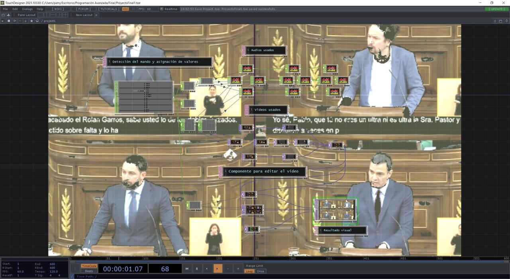
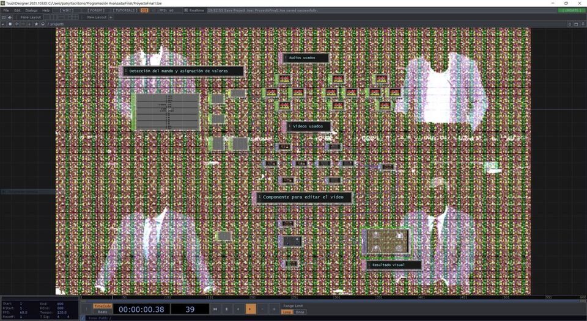
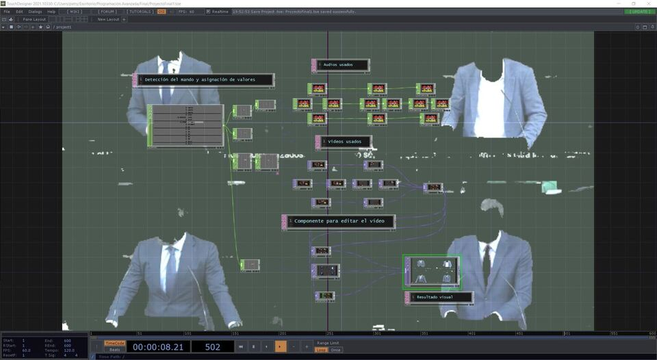

Build your own speech
Se ha desarrollado un programa que interactúa con el usuario a través de un periférico, en este caso el mando controlador de la consola Xbox One, y cuya respuesta del sistema es la variación en distintos apartados (sonoro y visual) de una composición.
Para llevar a cabo este programa se ha hecho uso del software TouchDesigner. En él se ha mapeado todas las teclas del mando de la consola Xbox One y se les ha proporcionado un efecto de video o audio a cada una.


